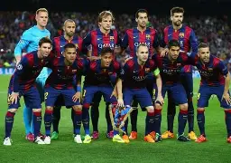
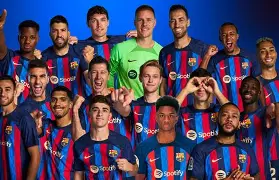
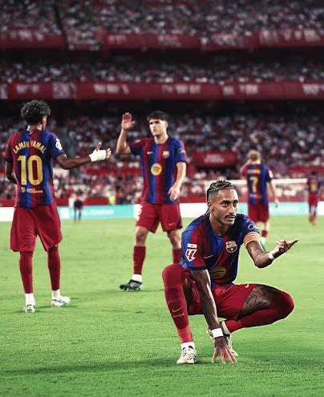
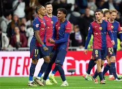

Futbol Club Barcelona, commonly known as FC Barcelona and colloquially as Barça, is a professional football club based in Barcelona, Catalonia, Spain, that competes in La Liga, the top division of Spanish football. Founded in 1899 by a group of Swiss, Catalan, German, and English footballers led by Joan Gamper, the club has become a symbol of Catalan culture and Catalanism, hence the motto Més que un club. Unlike many other football clubs, the supporters own and operate Barcelona. It is the third-most valuable football club in the world, worth $5.6 billion, and the world's fourth richest football club in terms of revenue, with an annual turnover of €800.1 million. The official Barcelona anthem is the "Cant del Barça", written by Jaume Picas i Guiu and Josep Maria Espinàs. Barcelona traditionally play in dark shades of blue and garnet stripes, hence nicknamed Blaugrana.

Barcelona are one of the world's most decorated clubs. Domestically, Barcelona has won a record 82 trophies: 29 La Liga, 32 Copa del Rey, 2 Copa de la Liga, 16 Supercopa de España and 3 Copa Eva Duarte titles, as well as being the record holder for the latter four competitions. In international club football, Barça has won 22 European and worldwide titles: five UEFA Champions League titles, a record four UEFA Cup Winners' Cups, a record three Inter-Cities Fairs Cups, five UEFA Super Cups, a joint record two Latin Cups and three FIFA Club World Cups. Barcelona was ranked first in the International Federation of Football History Statistics Club World Ranking for 1997, 2009, 2011, 2012 and 2015, and occupies the ninth position on the UEFA club rankings as of May 2023. The club has a long-standing rivalry with Real Madrid, and matches between the two teams are referred to as El Clásico. Barcelona is one of the most widely supported teams in the world, and the club has one of the largest social media followings in the world among sports teams. Barcelona players have won a joint record twelve Ballon d'Or awards, with recipients including Johan Cruyff, as well as a record six FIFA World Player of the Year awards, with winners including Romário, Ronaldo, Rivaldo, Ronaldinho and Lionel Messi. In 2010, three players who came through the club's youth academy—Lionel Messi, Andrés Iniesta and Xavi—were chosen as the three best players in the world in the Ballon d'Or ranking, an unprecedented feat for players from the same football academy. Additionally, players representing the club have won a record eight European Golden Shoe awards.

After Laporta's departure from the club in June 2010, Sandro Rosell was soon elected as the new president. The elections were held on 13 June, where he received 61.35% of total votes. Rosell signed David Villa from Valencia for €40 million and Javier Mascherano from Liverpool for €19 million. At the 2010 World Cup in South Africa, Barcelona players that had graduated from the club's La Masia youth system would play a major role in Spain becoming world champions. On 11 July, seven players who came through the academy participated in the final, six of whom were Barcelona players who started the match, with Iniesta scoring the winning goal against the Netherlands. In November 2010, Barcelona defeated their main rival Real Madrid 5-0 in El Clásico. At the ceremony for the 2010 FIFA Ballon d'Or in December, Barcelona's La Masia became the first youth academy ever to have all three finalists for the Ballon d'Or, with Messi, Iniesta and Xavi being named the three best players in the world for 2010. In the 2010-11 season, Barcelona retained the La Liga trophy, their third title in succession, finishing with 96 points. In April 2011, the club reached the Copa del Rey final, losing 1-0 to Real Madrid at the Mestalla in Valencia. In May, Barcelona defeated Manchester United in the 2011 Champions League Final 3-1 held at Wembley, a repeat of the 2009 final, winning their fourth European Cup. In August 2011, La Masia graduate Cesc Fàbregas was transferred from Arsenal and he would help Barcelona defend the Spanish Supercup against Real Madrid. The Supercup victory brought the total number of official trophies to 73, matching the number of titles won by Real Madrid.

In the 2011-12 season, Barcelona lost the semi-finals of the Champions League against Chelsea. Guardiola, who had been on a rolling contract and had faced criticism over his recent tactics and squad selections, announced that he would step down as manager on 30 June and be succeeded by assistant Tito Vilanova. Guardiola finished his tenure with Barça winning the Copa del Rey final 3-0, bringing the tally to 14 trophies that Barça had won under his coaching. It was announced in summer of 2012 that Tito Vilanova, assistant manager at Barcelona, would take over from Pep Guardiola as manager. Following his appointment, Barcelona went on an incredible run that saw them hold the top spot on the league table for the entire season, recording only two losses and amassing 100 points. Their top scorer once again was Lionel Messi, who scored 46 goals in La Liga, including two hat-tricks. On 11 May 2013, Barcelona were crowned as the Spanish football champions for the 22nd time, still with four games left to play. Ultimately, Barcelona ended the season 15 points clear of rivals Real Madrid, despite losing 2-1 to them at the beginning of March. They reached the semi-final stage of both the Copa del Rey and the Champions League, going out to Real Madrid and Bayern Munich respectively. On 19 July, it was announced that Vilanova was resigning as Barcelona manager because his throat cancer had returned, and he would be receiving treatment for the second time after a three-month medical leave in December 2012.
